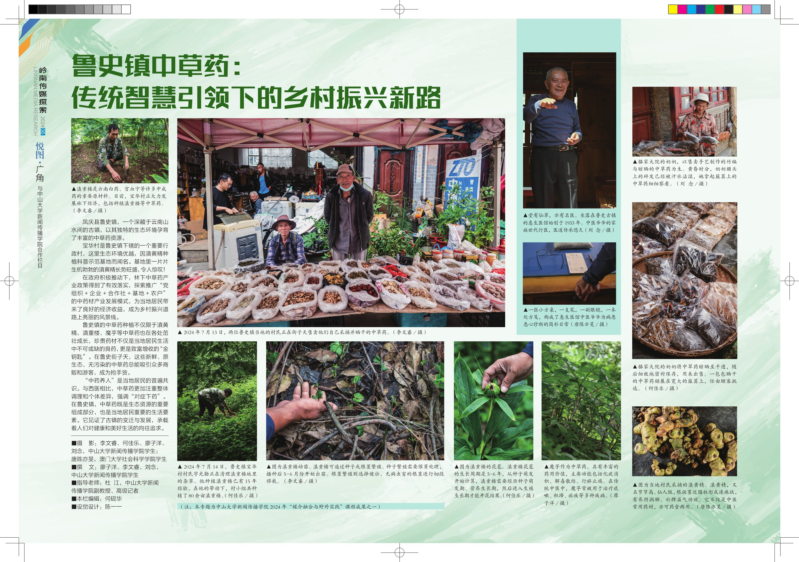

专题策划与田野观察
从地方日常中寻找报道切口，以中草药串联生态资源、劳动场景与村民生计，让乡村发展议题有具体的人和事作为载体。
04 / CONTENT / 策划
2024“媒介融合与野外实践”课程 · 云南凤庆驻地 20 天 · 摄影组组长
MY ROLE
我担任摄影组组长，负责专题策划、现场拍摄与最终成果汇总。从选题切口到素材组织，围绕共同主题推进小组创作，将多位成员的现场观察整合为完整图文专题。我也发挥自己的摄影兴趣，参与草药特写与集市场景的拍摄，并在成品中有摄影及撰文署名。
OVERVIEW
在云南凤庆为期 20 天的驻地实践中，团队以鲁史镇中草药为选题切口，将林下种植、乡村集市与传统医馆组织为一条观察地方生活的叙事线索。专题通过人物、场景与细节，呈现生态资源、传统智慧与村民生计之间的联系，最终形成由 11 张纪实照片及文字说明组成的图文成果，刊于《岭南传媒探索》2024 年第 6 期“悦图·广角”。
CAPABILITY IN PRACTICE
从地方日常中寻找报道切口，以中草药串联生态资源、劳动场景与村民生计，让乡村发展议题有具体的人和事作为载体。
结合人物、环境与物件细节组织视觉信息；个人署名照片包括滇重楼、幼苗及街子天草药售卖场景。
作为摄影组组长，负责策划和成果汇总，将多位成员的现场素材整合为主题一致、可连续阅读的图文专题。
FROM IDEA TO PRACTICE
从中草药这一具体对象切入，寻找自然资源、地方传统与日常生计的交汇点，让宏观议题落到可观察的现场。
以林下种植、集市售卖、医馆与居民生活形成叙事线索，用不同场景呈现草药在当地生活中的多重角色。
将劳动人物、环境画面与植物细节组合，在专题汇总中保留各位成员的署名，让多视角的记录围绕共同主题展开。
READ THE COMPLETE WORK
完整呈现原刊图文版面，保留全部照片、文字与团队署名。

完整一页图文专题 · 点击页面可放大阅读照片、正文与署名。